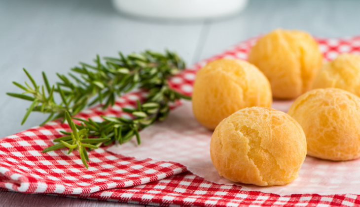

Voltar para a Homepage
Receita de pão de queijo vegano

Sobre a receita
Experimente o sabor incrível do pão de queijo tradicional, mas sem qualquer ingrediente de origem animal!
Com esta receita de pão de queijo vegano, você pode desfrutar de uma deliciosa iguaria feita com polvilho azedo, água, óleo, leite vegetal e fermento biológico seco.
Sua massa é moldada em bolinhas e assada até ficar crocante por fora e macia por dentro.
Não perca mais tempo e experimente essa deliciosa versão vegana do pão de queijo brasileiro.
Ingredientes
- 2 xícaras de polvilho doce
- 1 e 1/2 xícaras de batata baroa bem cozida e amassada
- 1/2 xícara de polvilho azedo
- 1/3 de xícara de óleo vegetal
- 1/4 de xícara de água morna
- Sal a gosto
Modo de preparo
- Comece cozinhando a batata baroa e fazendo o purê.
- Espere o purê esfriar até o ponto de conseguir tocá-lo sem queimar as mãos.
- Adicione todos os ingredientes numa tigela grande.
- Misture e amasse tudo com as mãos até que tenha uma massa homogênea.
- Molde os pães de queijo e coloque-os em uma assadeira.
- Considere o mesmo espaçamento de quando está assando pães de queijo congelados. Eles crescem um pouquinho.
- Asse os pãezinhos em forno baixo (150ºC) até que estejam sequinhos e com as rachaduras características.
Receita original